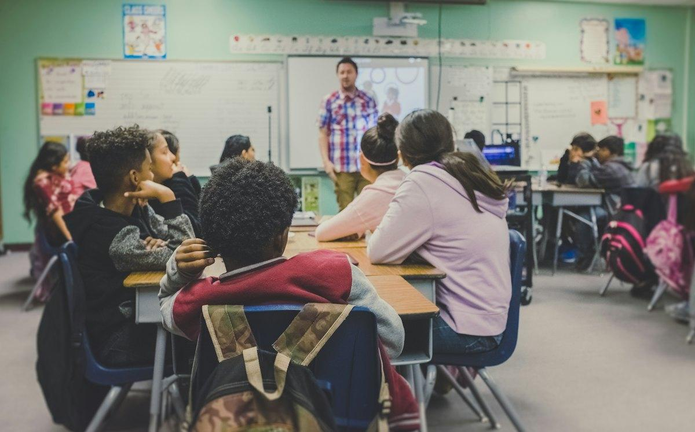

Ma grande révisionpassé composé · imparfait · futur · lire · écrire
Bonjour Luka !
- 1. Les verbes avec être⏱ 6 min
- 2. Avoir ou être ? Les verbes pronominaux⏱ 7 min
- 3. L'imparfait⏱ 7 min
- 4. Imparfait ou passé composé ?⏱ 7 min
- 5. Le futur simple⏱ 6 min
- 6. Les questions et les petits mots⏱ 6 min
- 7. Je lis et je comprends⏱ 8 min
- 8. J'écris mon texte⏱ 13 min
- ★ Mon bilan et « À revoir »à la fin

- Garde le même temps que la phrase : il est parti → Quand est-il parti ?Behalte dieselbe Zeit wie im Satz.
- Avec un nom : nom + verbe + -il / -elle : Pourquoi Léonard vient-il ?Mit einem Nomen: Nomen + Verb + -il / -elle.
- Le -t- seulement entre deux voyelles : a-t-il, parle-t-elle. Mais est-il (le t est déjà là).„-t-“ nur zwischen zwei Vokalen. „est-il“ hat schon ein „t“.
- Un seul sujet : Qu'est-ce que Léonard peint ? Et toujours un ? à la fin.Nur ein Subjekt. Und immer ein Fragezeichen.
- Je regarde le type de texte : ici, un e-mail. Qui écrit ? À qui ?Ich schaue auf die Textart: hier eine E-Mail. Wer schreibt? An wen?
- Je lis les questions avant le texte.Ich lese die Fragen vor dem Text.
- Je lis le texte deux fois. Un mot inconnu ? Je regarde le petit lexique.Ich lese den Text zweimal. Ein unbekanntes Wort? Ich schaue ins kleine Wörterverzeichnis.
- Pour chaque question, je retrouve la phrase dans le texte.Für jede Frage finde ich den Satz im Text.
Chère Mamie,
Samedi dernier, je suis allé au Musée national d'histoire naturelle, dans le Grund, avec ma classe. Il pleuvait beaucoup, mais nous étions tous de bonne humeur. Quand nous sommes arrivés, le guide nous attendait déjà devant la porte.
D'abord, nous avons visité la salle des dinosaures. Les squelettes étaient immenses ! Ensuite, le guide nous a montré des pierres très anciennes. Mon ami Tom voulait toucher une météorite, mais c'était interdit. Tout à coup, une alarme a sonné ! Tout le monde a eu peur… mais c'était seulement un exercice.
À midi, nous avons mangé nos sandwichs au bord de l'Alzette, parce qu'il ne pleuvait plus.
Et toi, quand tu étais petite, est-ce que tu allais aussi au musée avec ton école ? Dimanche prochain, je viendrai chez toi avec papa et je te montrerai mes photos. Je suis sûr que tu aimeras le squelette du mammouth !
Gros bisous,
Noah
- ○J'ai écrit au moins 8 phrases.Ich habe mindestens 8 Sätze geschrieben.
- ○J'ai utilisé au moins 4 connecteurs.Ich habe mindestens 4 Verbindungswörter benutzt.
- ○J'ai au moins 3 verbes au passé composé (les actions).Mindestens 3 Verben im Passé composé (die Handlungen).
- ○J'ai au moins 2 verbes à l'imparfait (le décor, les sentiments).Mindestens 2 Verben im Imparfait (Umgebung, Gefühle).
- ○Ma fin a une phrase au futur.Mein Ende hat einen Satz im Futur.
- ○Chaque phrase commence par une majuscule et finit par un point.Jeder Satz beginnt groß und endet mit einem Punkt.
Voir un exemple de texte
| Ex. | La bonne réponse | Ma réponse | La règle |
|---|